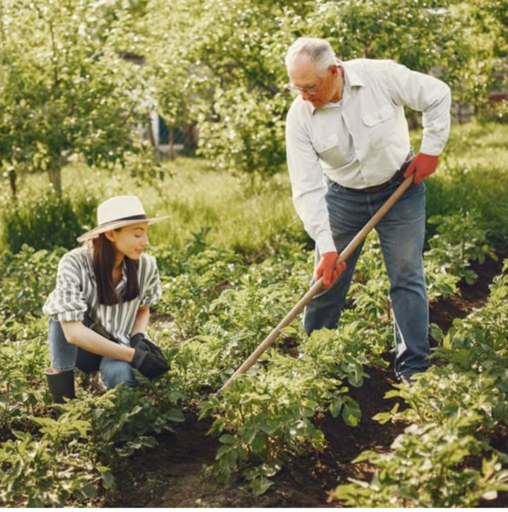

FEIRANTE COM FUTURO
Na Vida Verde, acreditamos que a agricultura é mais do que plantar e colher — é cultivar vidas, oportunidades e esperança. Desde o início, nossos feirantes foram parte essencial dessa missão. Eles não apenas oferecem alimentos frescos e de qualidade, mas também compartilham valores, histórias e muito carinho com cada cliente.
Pensando nisso, criamos a Feira Beneficente Vida Verde, realizada duas vezes ao ano, um evento especial que une a força do pequeno produtor com o poder da solidariedade. Em cada edição, 20% de tudo que é arrecadado é destinado a famílias de baixa renda, que recebem apoio para criar e manter sua própria horta comunitária ou doméstica.
Essa ação transforma vidas. Além de garantir uma alimentação mais saudável, promovemos autonomia, dignidade e geração de renda dentro das próprias comunidades.
Quando você compra na nossa feira ou apoia nossos feirantes, você também planta esperança e colhe transformação.
VIDA VERDE
VIDA VERDE
Cultivando Alimento, Transformando Vidas
O Projeto Vida Verde nasceu com um propósito simples, mas poderoso:
unir agricultura, solidariedade e desenvolvimento social. Somos uma
iniciativa que vai além da venda de frutas, verduras e legumes —
queremos gerar impacto positivo nas comunidades, promovendo uma
alimentação mais saudável e acessível a todos.
Nosso projeto trabalha lado a lado com feirantes, produtores locais e famílias de baixa renda, valorizando o pequeno agricultor e incentivando o consumo consciente.
- 📞 11 99999-9999
- 🌐 www.vidaverde.com
- 📧 contato@vidaverde.com.br